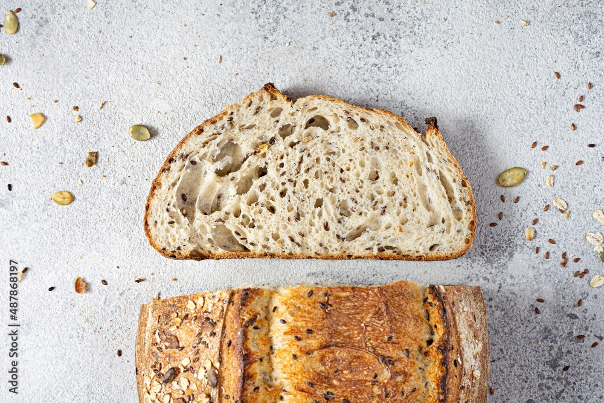
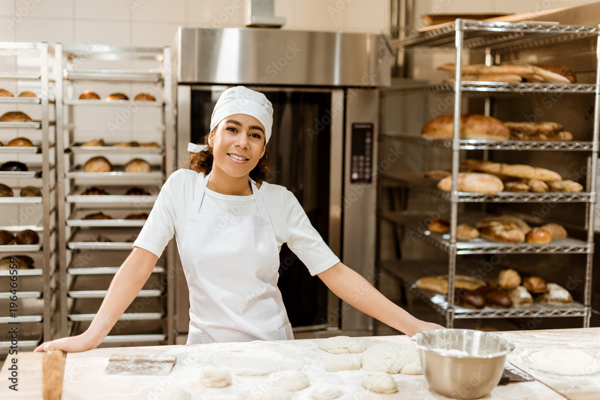

Wild Loaves
Mission Statement
Organic loaves made with local flours and wild yeasts
Our bread
Our signature succulent loaf.

Our pumpkin seeded loaves are a real crowd favourite!
Every loaf carefully baked for exactly the right length of time, resulting in a perfectly crisp crust.
Our proprietary culture of yeast and bacteria results in a unique leavening process that yields perfectly aerated loaves.
Our loaves have the perfect crumb - offering just the right amount of resistance when taking a bite!
Our Ingredients
Organic, locally sourced wholegrain flour.
Locally sourced fresh spring water.
A sourdough starter passed down the generations.
Meet the Team
George
Brilliant Baker
Gerry
Class Clown
